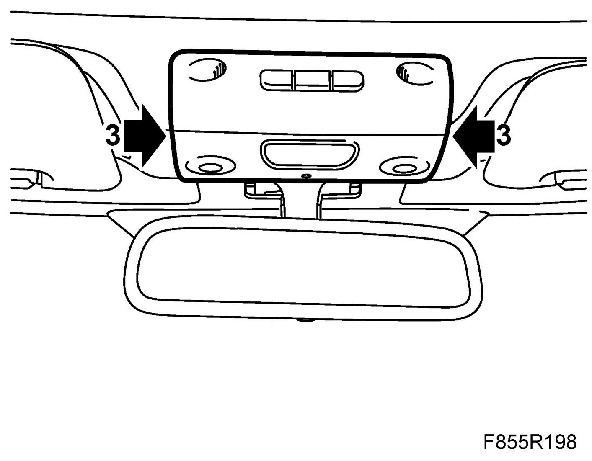
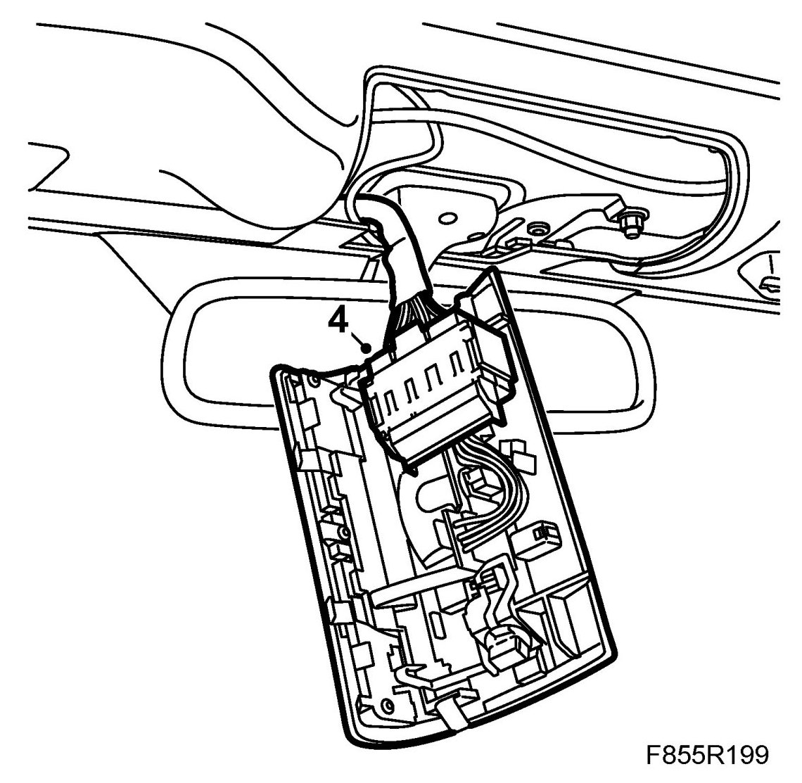
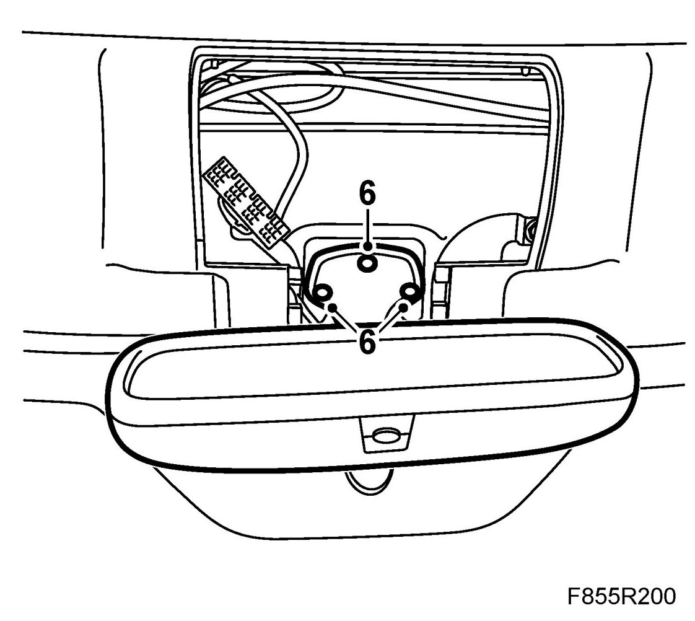
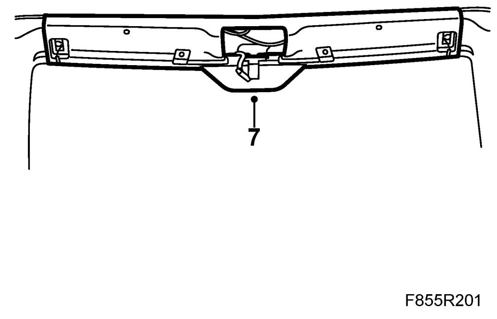
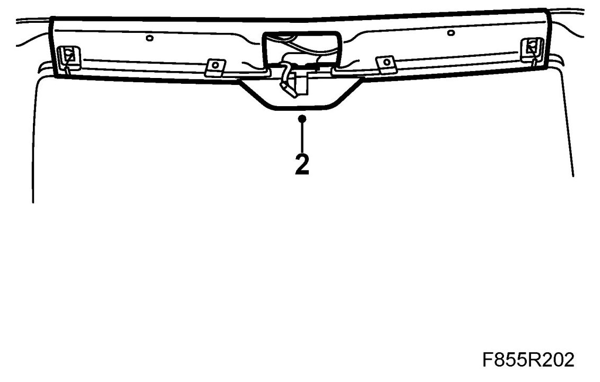
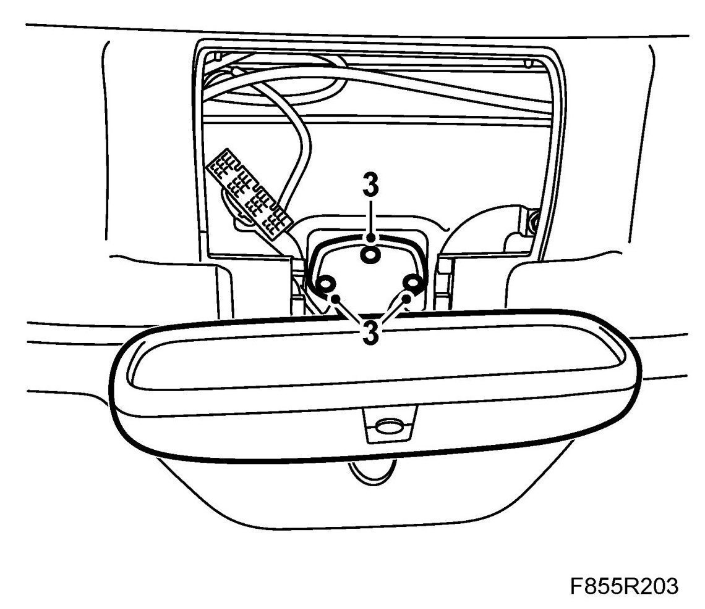
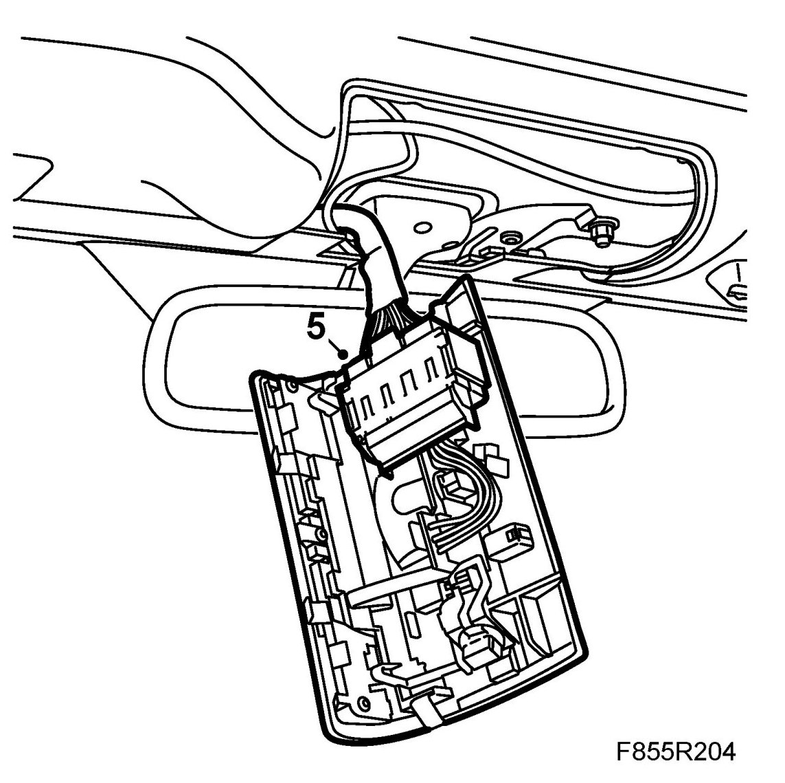
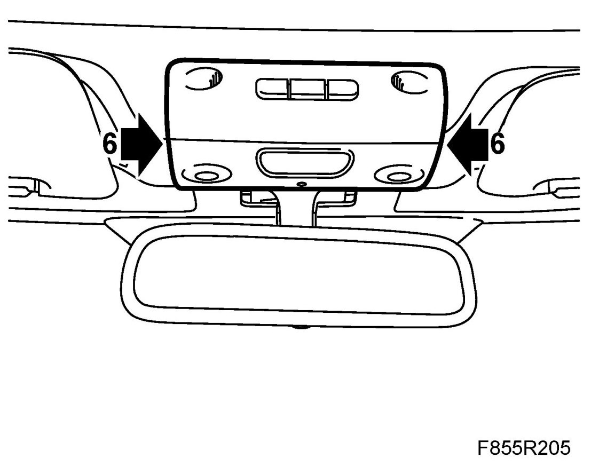

Windscreen Frame Upper Trim, CV
Windscreen Frame Upper Trim, CV
To remove
1. Open the soft top.
2. Remove both sun visors.
3. Remove the interior lighting. Use 82 93 474 Removal tool.

4. Remove the connector from the interior lighting. The lighting unit remains hanging in the wiring harness to the sun visors.

5. Remove the cover.
6. Remove the interior rear-view mirror.
Mirror with compass: Remove the connector.

7. Pull the windscreen trim down on the front, then pull back the trim and remove it.

8. Remove the sun visors' wiring harness from the trim.
To fit
1. Fit the sun visors' wiring harness to the trim.
2. Locate the windscreen upper trim in fitting position on the rear side, then press the trim upwards in the front.

3. Fit the interior rear-view mirror.

4. Fit the rear-view mirror base cover.
5. Connect the connector to the interior lighting.

6. Fit the interior lighting.

7. Fit both sun visors.
8. Close the soft top.